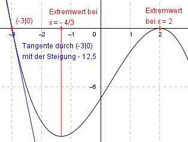

Aufgabe 45 Der Graph einer ganzrationalen Funktion 3. Grades schneidet die x-Achse bei -3, hat dort eine Steigung von -12,5 und bei x = -4/3 und x = 2 Extremstellen. Wie lautet seine Funktionsgleichung?  Allgemeine Form einer ganzrationalen Funktion 3. Grades: f(x) = ax3 + bx2 + cx + d f’(x) = 3ax2 + 2bx + c f’’(x) = 6ax + 2b 4 Bedingungen: 1. Schneidet die x-Achse bei -3 bedeutet: f(-3) = 0 --> a * (-3)3 + b * (-3)2 + c * (-3) + d = 0 --> - 27a + 9b - 3c + d = 0 I 2. Hat dort eine Steigung von - 12,5 bedeutet: f’(-3) = -12,5 --> 3a * (-3)2 + 2b * (-3) + c = -12,5 --> 27a - 6b + c = - 12,5 II 3. Hat bei x = - 4/3 eine Extremstelle bedeutet: f’(-4/3) = 0 --> 3a * (-4/3)2 + 2b * (-4/3) + c = 0 --> 16/3a - 8/3b + c = 0 |*3 16a - 8b + 3c = 0 III 4. Hat bei x = 2 eine Extremstelle bedeutet: f’(2) = 0 --> 3a * 22 + 2b * 2 + c = 0 --> 12a + 4b + c = 0 IV III + II * (-3) 16a - 8b + 3c = 0 -81a + 18b - 3c = 37,5 ---------------------- -65a + 10b = 37,5 V IV * (-3) + III -36a - 12b - 3c = 0 16a - 8b + 3c = 0 ------------------- -20a - 20b = 0 VI V * 2 + VI -130a + 20b = 75 -20a - 20b = 0 ----------------- -150a = 75 |:(-150) a = -0,5 a = -0,5 in VI eingesetzt: -65 * (-0,5) + 10b = 37,5 32,5 + 10b = 37,5 |-32,5 10b = 5 |:10 b = 0,5 a = -0,5 und b = 0,5 in III eingesetzt. 16 * (-0,5) - 8 * 0,5 + 3c = 0 -8 - 4 + 3c = 0 -12 + 3c = 0 |+ 12 3c = 12 |:3 c = 4 a = -0,5 und b = 0,5 und c = 4 in I eingesetzt: -27 * (-0,5) + 9 * 0,5 -3 * (4) + d = 0 13,5 + 4,5 - 12 + d = 0 6 + d = 0 |-6 d = -6 Gesuchte Funktionsgleichung: f(x) = -0,5x3 + 0,5x2 + 4x - 6